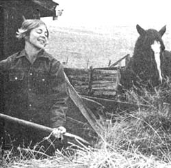
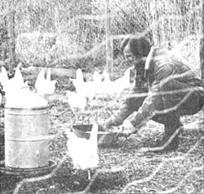

WANTED: Responsible man or couple for ranch work. References preferred, experience necessary. Two-bedroom furnished house and beef supplied, plus $400 per month. Call or write Albert XXYYZZY, Alzada, S.D.
Of course, the ad I've just quoted is hypothetical . . . but not very, because such notices appear often these days. Often enough, at least, that a man (or couple) who wishes to live the good country life with pay can realistically consider ranch work as an alternative to the city grind.
If you've been thinking of a move to fresher air and simpler living but can't see your way clear to buying your own piece of land, rural labor can give you many of the same satisfactions. And if your plans do include a homestead, the job of hired hand is a good prelude . . . a chance to build your experience and earn some cash at the same time.
Let's look briefly at the advantages of a job as hired hand (or as an absentee owner's manager of a ranch or of several ranches . . . another possibility that's opening up these days).
[1] When a rancher employs steady help, he almost invariably supplies a house . . . and a good worker can get additions built on if his family increases.
[2] Part of the hired man's wage is usually paid in fresh, home-grown food: beef on western ranches, milk on dairy operations or similar compensation depending on where you work. In addition, garden space is available and you'll have the chance to keep a milk cow (for your own butter, ice cream, coffee cream) . . . or chickens for eating and for eggs . . . or horses and other pets. Growing your own plants and animals outside working hours will increase your enjoyment, reduce the cost of living even further and bring closer the day when you can have your own land.
[3] Even though you're working for someone else, you'll have freedom as a hired hand since the work's pace moves with the seasons. The job is hard during summer haying, slower in late fall . . . and in winter, once the feeding is done, you're through for the day unless you have to cut wood for your fireplace. And think of all that space and clean air you'll have to enjoy your spare time in!
[4] If you do your job well and care about your work, you'll find your position just as secure as you wish Even if you're let go, other ranchers in the area is may be ready to hire you . . . and if you stay, you might get an option to buy the land-or part of it-when the boss retires. (His sons and daughters often prefer life in town these days.)
Well, you'll like most of it, anyhow. Of course, any job has its drawbacks, and you'll need to think ahead about the hardships of ranch work and decide whether you'll be able to live with them.
[1] The hired man's biggest hassle is long hours. When the hay is ready, or the oats, you stay with the work until it's finished. When the heifers are calving you check them every three hours, day and night, 30 below zero or not. In some ways, though, the hours are more flexible than they would be in a town job. If you're sick, for instance, you don't have to call in because the boss is handy . . . and if you really need time off, he'll understand.
[2] When you do have a free day, distance from town may be a problem. In fact, if you or your lady dig fancy clothes or like to spend long hours in museums, you'd better forget ranch life, because trips to "civilization" will be rare and mostly taken up by shopping for a month's worth of supplies at a time. As for dressing up, all you need out home are Levi's.
I need hardly add that-if you're going to be a long way from anywhere-you really need your own transportation (unless you relish the idea of waiting until your employer can take you to town).
[3] If you like bright lights and late hours, find another job. You can't party until 2 a.m. and get up at 6 (at least not often). You won't be partying close to home, either, since the people nearby will probably differ from you in many ways.
On the other hand, if it's solitude and not company you want, all you have to do is avoid church and the American Legion meetings. The country folks are busy too, and they mind their own business if you mind yours.
[4] Women's liberation has not reached ranches and farms. A woman alone-no matter what her experience-would be unlikely to get a job as a hired hand, despite the fact that rural daughters (like me) often do a man's work in the field. This isn't the place to discuss the contradictions that are evident in such an attitude . . . I'm just telling you that's how it is. If this discrimination bugs you, ladies, get out there and try to get hired. I could be wrong.
OK, if you made it through my list of drawbacks and are still with me, it's time to ask yourself whether you have what it takes to become a good hired hand.
The first qualification for a ranch worker is experience. It's essential, and it can't be faked. Unless you've lived in a rural situation and had some dealings with machinery and cattle-or are willing to learn the hard way-don't try to get a farm or ranch job.
Even if you're quick to pick up skills, you see, you won't be able to catch on to country ways overnight. While the mechanics-of the equipment itself and of the tasks you'll have to perform-are fairly simple, there's a feeling, an instinct, for the work and the life that can't be taught in the conventional way. You can be shown how to rivet the sickle blades onto the cutter bar, but learning how to bring the cows home two days before the blizzard is a more subtle matter that takes time to master.
Examples of the need for that instinct abound. Here's a typical case: You're alone at midnight in the barn with a heifer who's calving for the first time. She's lying on the floor, struggling to bear the calf, and has been for 30 minutes. A bag of fluids has come out and some feet are protruding, encased in a membrane. Is she in trouble or not? If she is, you must get a calf puller and drag the young one out before he suffocates. If this doesn't work; a Caesarean may be necessary, but thats time-consuming and expensive. However, if you wait a little longer, the cow may give birth unaided. Does she need a vet? Should you call the boss?
There are signs that can tell you what todo, but to read them you need experience. For one thing, it helps to have seen a number of such births so you can judge how nearly born the calf is and whether a leg or his head is caught inside, or whether he's deformed. It also helps to know, by looking at the cow's eyes and body, how much she's suffering. Finally, you need to be able to put your hand and arm inside the heifer to check the position of the calf's head and legs. The ability to do this is partly physical, largely mental.
If you make a wrong decision at this point, it'll cost your boss at least a calf, possibly the cow too . . . and maybe a vet bill to boot, if you panic. To decide right, you have to know the alternatives and then have that extra margin of intuition (and even people who have all that still make mistakes).
When there's so much to learn about helping out on the land, you can see why a, rancher or farmer is seldom inclined to go through a long training program with someone who may later find that he doesn't like the life. Such a landowner is particularly irritated each spring when city youths call up and offer to work for "town wages", without a shred of experience or knowledge. By the time they'd built up their strength and learned what to do, the summer would be over and the boss left with annoyance and an empty wallet.
If you're serious about becoming a hired man, then, get practice somehow. If you're in high school and want to try country job later, find a ranch boy to visit on weekends so you can learn the work and find out if you have the instinct.
If you're out of school, you might use the same approach, or offer to work free to learn the ropes. Even a temporary job on a hay or fencing crew might lead to more permanent employment. Or you could trade your skill-in plumbing, for example-for some experience in the rural life.
Experience alone, however, isn't enough . . . you also need a liking for the work and the land. The job of hired man isn't one you can do just to make some bread, or just to live in the country. Before you take on such a position, you need to realize that ranchers are among the hardest-working, lowest-paid laborers of modern times, and their hands don't have an easy life.
To cope with a ranch job, you have to love being physically fit and able to work to the limits of your endurance in all weather, against immense odds. You continually challenge the land, brave the blizzard on foot to bring the cattle in, brave it on horseback to feed the trapped calves, brave the prairie fire some tourist's cigarette has started to save the cows that are drawn to the flames.
It's a hard life, but there's a fairness about it, an awareness of and respect for the land and its animals. One result is that many ranchers are ecology-minded and will agree with you completely about the need to eliminate poison and to control hunters. That kind of agreement bridges a lot of political gaps!
Along with the big questions, like experience and general attitude, there are some small points about you that can make a big difference in your success with a country job. Little matters like smoking, for instance, are seldom mentioned in the initial interview, but if you plan to work outdoors in summer you must expect to confine that habit to the house. Fields and pastures are explosively dry in late July and August, barns are full of hay and your boss is nervous. He's right, too. Prairie and grainfield fires-caused by lightning, railroad trains, spontaneous combustion-do millions of dollars worth of damage yearly anyway without your multiplying the risk. Besides, with all that fresh air to breathe, you'd be a fool to smoke . . . and if you don't, it's a good point to emphasize when you're applying for the job.
Like tobacco, alcohol can cause a rancher a lot of trouble with his employees, and a few ads specify "no drinkers". What the advertiser really means is that you mustn't get drunk and fail to appear on Monday mornings, or drive through pasture fences and sing bawdy ballads in the bunkhouse. Reasonable drinking, however, is usually acceptable. I've never seen a "no dopers" ad, but you can assume that discretion is the answer here, also. Actually, you have to be pretty alert to keep the job-and your life-so you're really better off without either booze or drugs.
And what about hair? Well, you're probably best off without too much of that, also. You'll save yourself some trouble by applying shorn, then letting your employer learn to trust you as your hair grows. Some ranchers, of course, would hire you anyway . . . and some would hire you and then hassle you continually. The point is to know that hair length is still an issue in the areas where hired-hand jobs exist, and I'm telling you so you won't walk in unaware and then feel insulted if you're rejected for that alone. The fact is that many Westerners-who conveniently forget the styles of pioneer days-still believe long hair to be the mark of the Commie pinko fag heroin-smoker. You can't fight it. How badly do you want the job?
One last bit of advice about personal habits: If you're a couple and unmarried, save yourselves trouble by indicating that your relationship is legal. You won't change the local people's attitude by explaining the situation, any more than they'll change yours by condemning you. Again, how much do you want the job?
Maybe you've thought over my description of the perfect hired man and are sure you'd be a real asset to some rancher. In that case, you can find your future employer by using most of the usual job-hunting techniques (except that you don't have to write letters unless you live out of the area where you want to work).
You might start your search by checking ads in the farm journals like Dakota Farmer and Western Livestock Reporter- see the section on "Farming and Rural Interest Magazines" in Writer's Market- and the daily newspapers in the neighborhood you want. You can also go to the local employment office and leave a record of your experience and the type of work you're after.
If these first inquiries don't turn up a job for you, you can try visiting the area's ranchers (prosperous-looking places, with large barns and a lot of machinery, are your best bet). Find out who the community leaders are and call on them.
When you drop in on local people, observe rural etiquette: Dress in work clothes, code straight to the point if the folks are busy, accept invitations to coffee, be polite . . . and get out if the refusal is clear. Remember to ask the families you visit whether they know of any neighbors who are looking for help.
While you're visiting, see the local heads of stockmen's groups or of farm and ranch associations like the National Farmer's Organization and the Farmers Union (and don't neglect the neighborhood auctioneers). Such people travel their areas extensively and may have more current information on who needs an extra hand than the employment office.
Last-but not least-find out which city bigwigs own land in the region you're interested in, and apply to them for a caretaker's job. In fact, this approach might turn out to be best of all, since these urban owners seldom live on their holdings.
Once more, with feeling, before you set off on serious jobhunting: Don't try to fake it. If you get a place as a hired man under false pretenses, you won't be able to handle the life and you'll increase the problems of your brothers and sisters who are sincerely trying to make it in the country. If you're not yet skilled in rural ways, don't be too proud to take a short-term job and learn. Remember that you're working toward a certain lifestyle, not just trying to pick up a little movin'-on cash, Slow down, take the cosmic view and prepare yourself for a new kind of life.
Once you do get a steady job as a hired man, I charge you not to take the work lightly. All my life I've watched one fine rancher after another sell out and move to town, for lack of a son to take over the place or a conscientious worker to help him keep his way of life. And it's a fact that-soon after they move to town-these men often die. That's the kind of hold the land has on you. Can you say as much of your 9-to-5 job?
It's been nice talking to you, brother, but I gotta get back to the hayfield. I really just stopped to give that doe a chance to pick up her fawn and clear out before I mowed the part down by the creek.
|
 |
 |
|